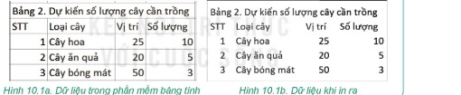
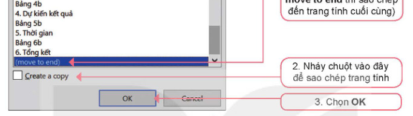
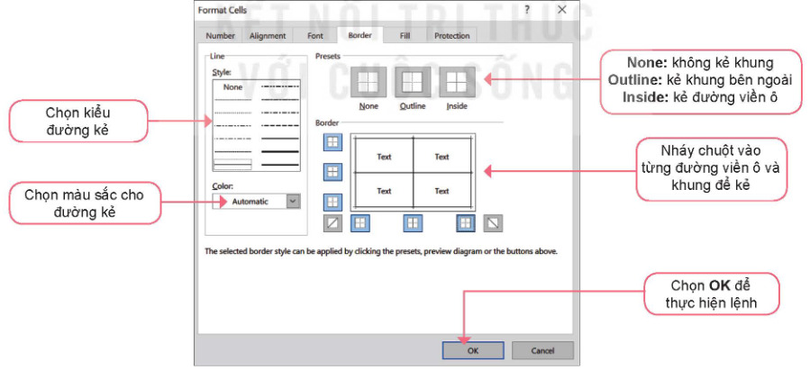
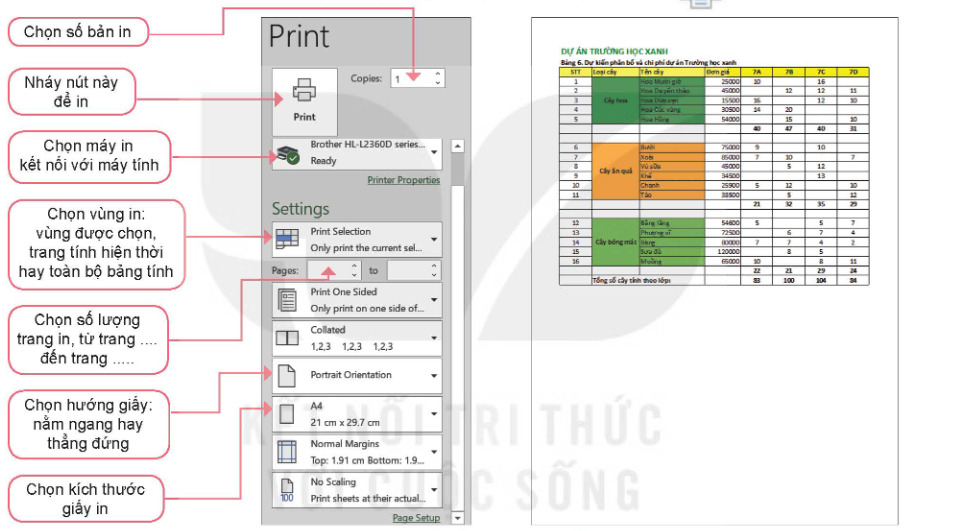
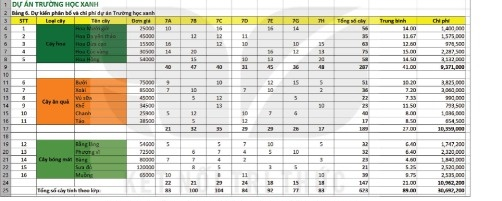

Dành cho giáo viên
Theo dõi lớp
| Học sinh / Nhóm | Đã nộp | Cập nhật |
|---|
Bước 1
1 Khởi động
Khởi động Trình bày dự án trước lớp
Công việc thu thập dữ liệu, tính toán dữ liệu cho dự án Trường học xanh đã hoàn thành. Việc tiếp theo là trình bày, hoàn thiện bảng tính để có thể trình bày trước lớp.
Ghi bài Khởi động
Sau khi thầy cô chốt, em chép nội dung dưới đây vào vở.
Bước 2 · Hình thành kiến thức mới
2.1 Các thao tác hoàn thiện bảng tính
Hoạt động 1 Tại sao khi in dữ liệu ra giấy lại không nhìn thấy các đường kẻ?
Bạn An in dữ liệu trong Bảng 2. Dự kiến số lượng cây cần trồng (Hình 10.1a) ra giấy nhưng kết quả nhận được là bảng dữ liệu không có các đường kẻ (Hình 10.1b) giống như bạn nhìn thấy trên màn hình máy tính. Em có biết lí do tại sao không?

Thử trên bảng mô phỏng: bấm Xem trước khi in và quan sát; sau đó chọn vùng A2:D5, bấm Kẻ viền → Outline + Inside rồi xem trước khi in lần nữa.
Đọc hiểu a) Các thao tác với trang tính
Mỗi bảng tính bao gồm nhiều trang tính. Vị trí phía dưới của bảng tính là nơi hiện danh sách các trang tính.
- Tạo trang tính mới: nháy chuột vào nút ⊕ bên cạnh tên các trang tính.
- Xoá một trang tính: nháy nút phải chuột vào tên trang tính rồi chọn Delete.
- Chèn trang tính mới trước trang tính A: nháy nút phải chuột vào tên trang tính A, chọn Insert/Worksheet rồi chọn OK.
- Đổi tên trang tính: nháy đúp chuột vào tên trang tính, nhập tên mới, nhấn phím Enter.
- Thay đổi thứ tự các trang tính: nháy chuột vào tên trang tính, kéo thả chuột sang trái, phải để di chuyển trang tính đến vị trí mong muốn.
- Sao chép một trang tính sang vị trí mới: nháy nút phải chuột vào tên trang tính và chọn lệnh Move or Copy...; trong cửa sổ Move or Copy chọn vị trí muốn sao chép đến (chọn move to end thì sao chép đến trang tính cuối cùng), nháy chuột chọn Create a copy, chọn OK.

Đọc hiểu b) Kẻ đường viền ô và khung bao quanh vùng dữ liệu
Trên màn hình máy tính em nhìn thấy mỗi trang tính là một lưới các ô nhưng mặc định khi in dữ liệu thì các đường lưới không được in ra. Vì vậy, trước khi in dữ liệu của bảng tính em cần kẻ đường viền ô và khung bao quanh vùng dữ liệu nếu cần:
- Chọn vùng dữ liệu muốn kẻ đường viền ô, kẻ khung và chọn Format Cells.
- Trong cửa sổ Format Cells chọn trang Border, thiết lập các thông số kẻ đường viền, kẻ khung như hướng dẫn trong Hình 10.4: chọn kiểu đường kẻ, màu sắc cho đường kẻ; nháy chuột vào từng đường viền ô và khung để kẻ; chọn OK.

Ghi bài 1. Các thao tác hoàn thiện bảng tính
Sau khi thầy cô chốt, em chép nội dung dưới đây vào vở.
Bước 2 · Hình thành kiến thức mới
2.2 In dữ liệu trong bảng tính
Hoạt động 2 In dữ liệu
Em hãy quan sát Hình 10.5 và nêu các bước in một trang tính.
Có thể in trang tính hiện thời, hoặc toàn bộ bảng tính, hoặc có thể chỉ in vùng dữ liệu đang chọn, phần mềm sẽ tự động tính toán để in. Thao tác in dữ liệu như sau: Bước 1. Đánh dấu vùng dữ liệu muốn in. Bước 2. Thực hiện lệnh File/Print. Xuất hiện hộp thoại Print như Hình 10.5. Nhập các thông số in trước khi chọn Print để in. Bước 3. Sau khi nhập các thông số in, nháy chuột lên nút lệnh Print để tiến hành in.
Có thể in trang tính hiện thời, hoặc toàn bộ bảng tính, hoặc có thể chỉ in vùng dữ liệu đang chọn, phần mềm sẽ tự động tính toán để in. Thao tác in dữ liệu như sau: Bước 1. Đánh dấu vùng dữ liệu muốn in. Bước 2. Thực hiện lệnh File/Print. Xuất hiện hộp thoại Print như Hình 10.5. Nhập các thông số in trước khi chọn Print để in. Bước 3. Sau khi nhập các thông số in, nháy chuột lên nút lệnh Print để tiến hành in.

Ghi bài 2. In dữ liệu
Sau khi thầy cô chốt, em chép nội dung dưới đây vào vở.
Bước 2 · Thực hành
2.3 Thực hành: Trình bày hoàn chỉnh dữ liệu dự án Trường học xanh
Nhiệm vụ Trang tính 6. Hoàn thiện
Nhiệm vụ: tạo trang tính mới để trình bày dữ liệu của dự án Trường học xanh; sử dụng các kiến thức đã biết để định dạng dữ liệu và trình bày trang tính; kẻ đường viền, kẻ khung.
Hướng dẫn:
Hướng dẫn:
- a) Tạo trang tính mới: mở tệp THXanh.xlsx; tạo trang tính mới có tên là 6. Hoàn thiện; chọn trang tính 5. Tổng kết và sao chép nội dung trang tính này vào trang tính 6. Hoàn thiện (bảng mô phỏng đã có sẵn); sửa tên các dòng đầu của trang tính như Hình 10.6 (ô A2: Bảng 6. Dự kiến phân bổ và chi phí dự án Trường học xanh).
- b) Định dạng dữ liệu và trình bày trang tính: cột Trung bình: định dạng là số có hai chữ số thập phân; cột Chi phí: định dạng là số không có chữ số thập phân (số chữ số thập phân bằng 0) và hiển thị phân tách hàng nghìn, hàng triệu,…; tại cột Loại cây (cột B) gộp ô các ô cùng nhóm loại cây hoa, cây ăn quả, cây bóng mát; căn giữa dữ liệu trong các ô đã gộp theo cả chiều dọc và chiều ngang; tô màu nền cho các ô dữ liệu theo từng loại cây.
- c) Kẻ đường viền, kẻ khung: đánh dấu toàn bộ vùng dữ liệu chính của trang tính (vùng A3:N25); kẻ đường viền cho các ô và kẻ khung cho vùng dữ liệu; căn chỉnh một lần nữa các cột và hàng của trang tính một cách thích hợp, có thể theo mẫu như Hình 10.6. Lưu tệp.

Ghi bài 3. Thực hành
Sau khi thầy cô chốt, em chép nội dung dưới đây vào vở.
Bước 3
3 Luyện tập
Luyện tập Câu hỏi SGK trang 54
Câu 2 làm trên bảng mô phỏng ở phần Thực hành: kéo chọn tên các cột E đến K → Ẩn → Xem trước khi in.
Ghi bài Luyện tập
Sau khi thầy cô chốt, em chép nội dung dưới đây vào vở.
Bước 4
4 Vận dụng
Vận dụng Điểm thi khảo sát
Ghi bài Vận dụng
Sau khi thầy cô chốt, em chép nội dung dưới đây vào vở.